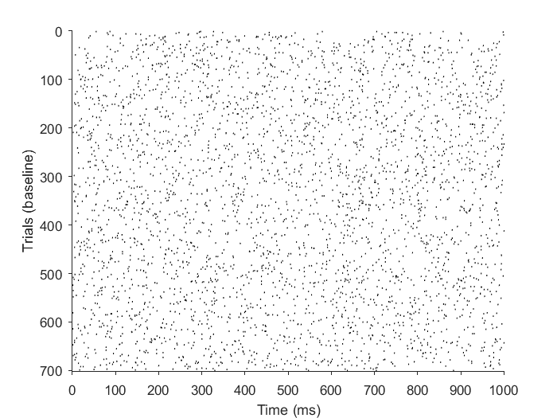
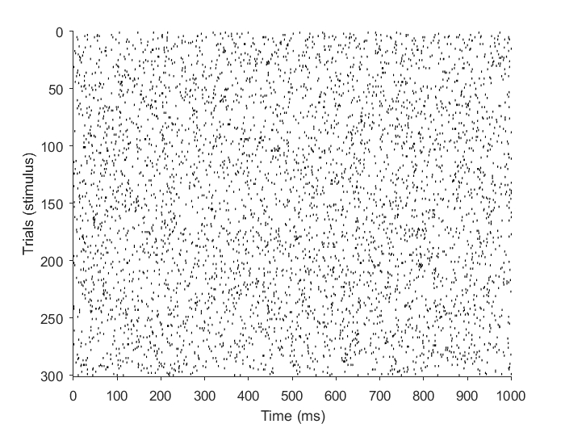
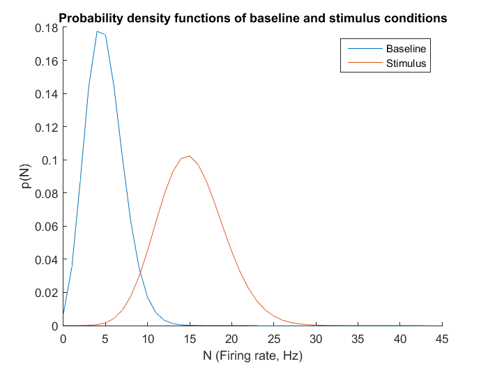
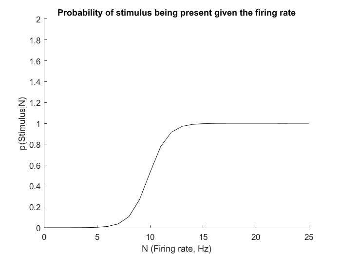

clear all;
close all;
clc;
tSim = 1;
nTrials = 1000;
pS = 0.3;
fr_baseline = 5;
fr_stimulus = 15;
nTrialsBaseline = round(nTrials*(1-pS));
nTrialsStimulus = round(nTrials*pS);
dt = 1/1000;
nBins = floor(tSim/dt);
spikeTrains_baseline = rand(nTrialsBaseline, nBins) < fr_baseline*dt;
spikeTrains_stimulus = rand(nTrialsStimulus, nBins) < fr_stimulus*dt;
for i=1:nTrialsBaseline;
count_baseline(i,1) = (size(find(spikeTrains_baseline(i,:)==1),2))/tSim;
end
for i=1:nTrialsStimulus;
count_stimulus(i,1) = (size(find(spikeTrains_stimulus(i,:)==1),2))/tSim;
end
figure;
hold on
h1=histogram(count_baseline);
h2=histogram(count_stimulus);
xlabel('Firing rate (Hz)');
ylabel('Number of trials');
legend('Baseline','Stimulus');

figure;
LineFormat.LineWidth = 0.7;
LineFormat.Color = [0 0 0];
plotSpikeRaster(spikeTrains_baseline,'PlotType','vertline','LineFormat',LineFormat);
xlabel('Time (ms)');
ylabel('Trials (baseline)');
figure;
LineFormat.LineWidth = 0.7;
LineFormat.Color = [0 0 0];
plotSpikeRaster(spikeTrains_stimulus,'PlotType','vertline','LineFormat',LineFormat);
xlabel('Time (ms)');
ylabel('Trials (stimulus)');
 
lambdahat_baseline = poissfit(count_baseline);
lambdahat_stimulus = poissfit(count_stimulus);
pd_baseline = makedist('Poisson',lambdahat_baseline);
pd_stimulus = makedist('Poisson',lambdahat_stimulus);
x = [0:max(count_stimulus)*1.5];
y_baseline = pdf(pd_baseline, x);
y_stimulus = pdf(pd_stimulus, x);
figure;
hold on;
plot(x,y_baseline);
plot(x,y_stimulus);
xlabel('N (Firing rate, Hz)');
ylabel('p(N)');
legend('Baseline', 'Stimulus');
title('Probability density functions of baseline and stimulus conditions');

posterior = (y_stimulus*pS)./(y_stimulus*(pS)+y_baseline*(1-pS));
figure;
hold on;
plot(x, posterior,'k');
xlabel('N (Firing rate, Hz)');
ylabel('p(Stimulus|N)');
title('Probability of stimulus being present given the firing rate');
xlim([0 25])
ylim([0 2])
